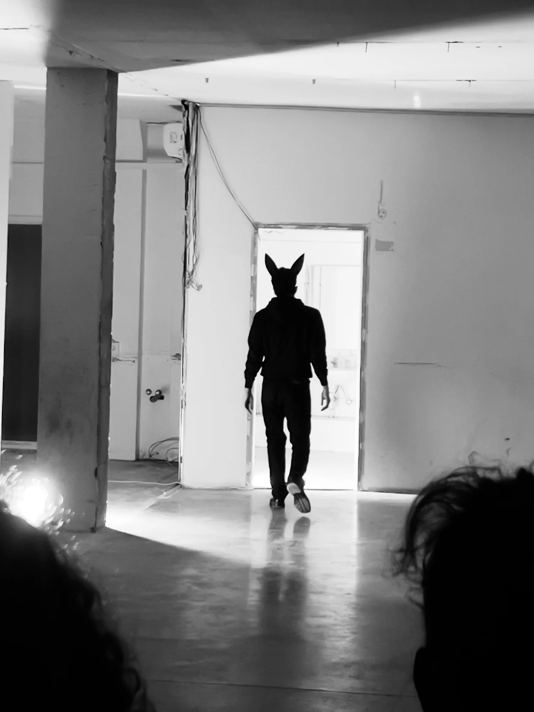
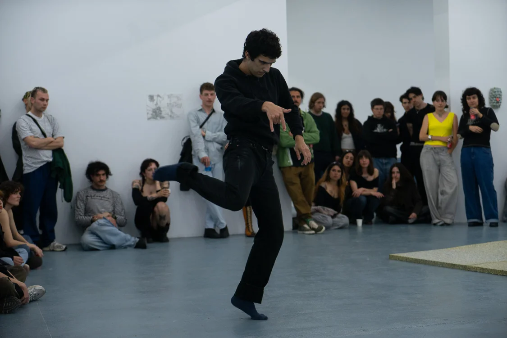
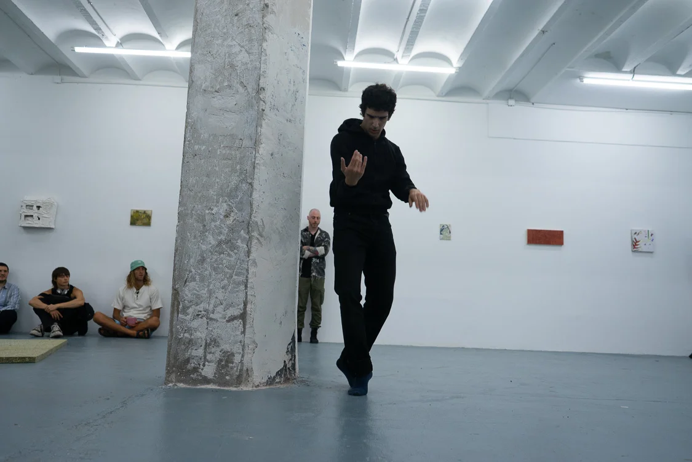

OLIVER (2024)
OLIVER es un personaje “sadcumado” que plantea, mediante la sátira, diversas reflexiones en torno al capitalismo, la digitalización, el ilusionismo y el tecnofeudalismo. OLIVER funciona como una ventana ‘world-glimpsing’ al mundo poético-ficcional de laSADCUM.
Cada vez en una dimensión nueva. Cada vez un ensayo corporal nuevo.
- Concepte i interpretació
- Guillem Jiménez


